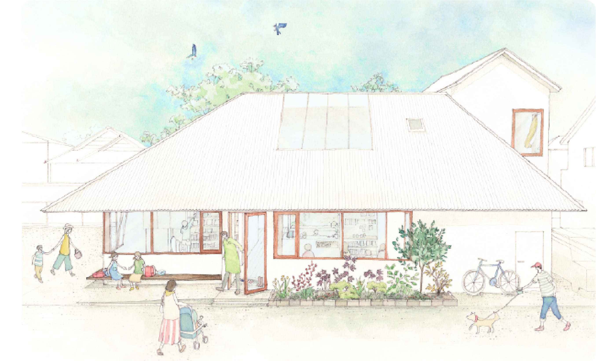
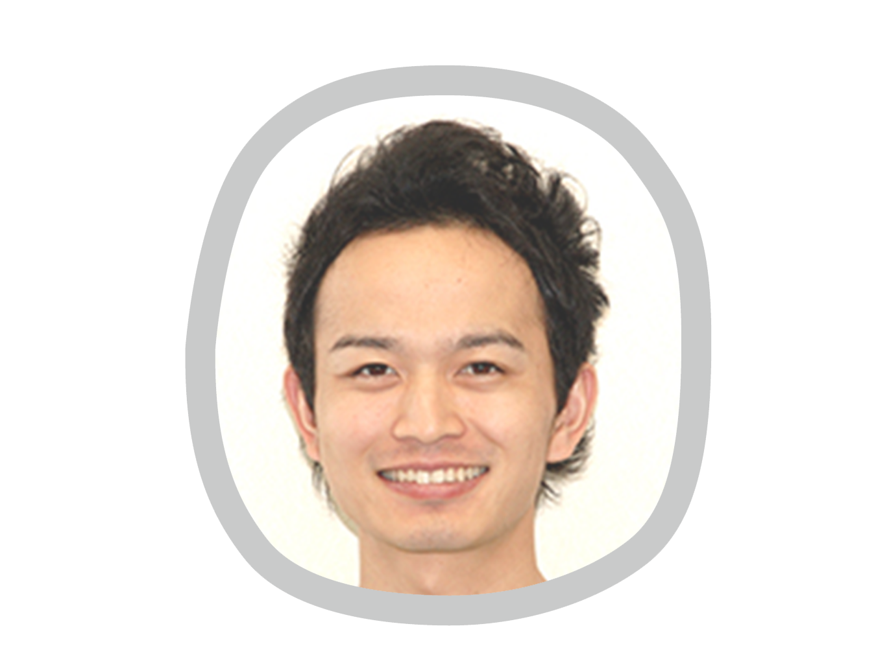
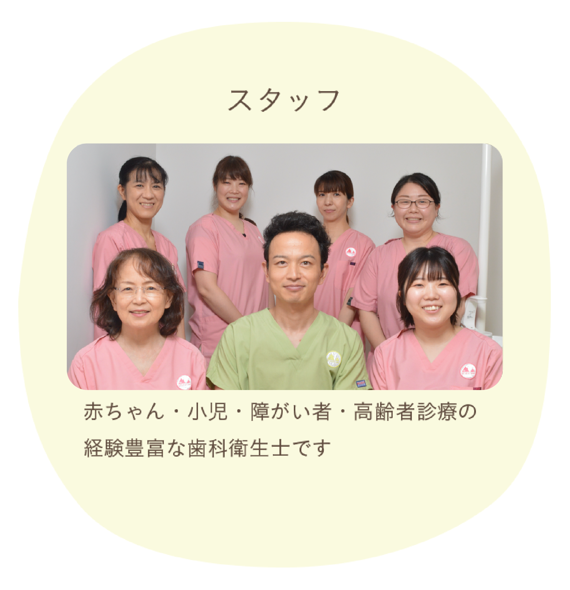
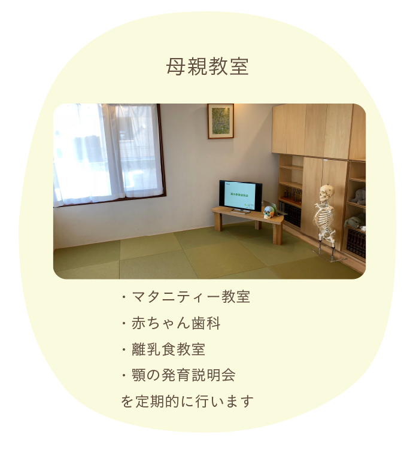
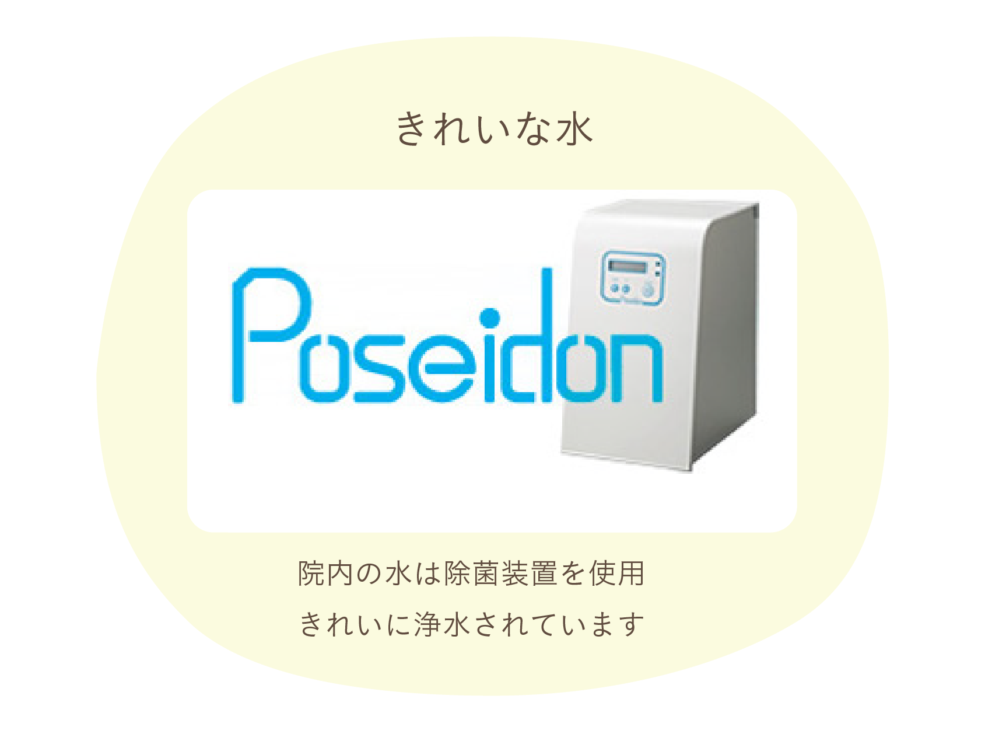
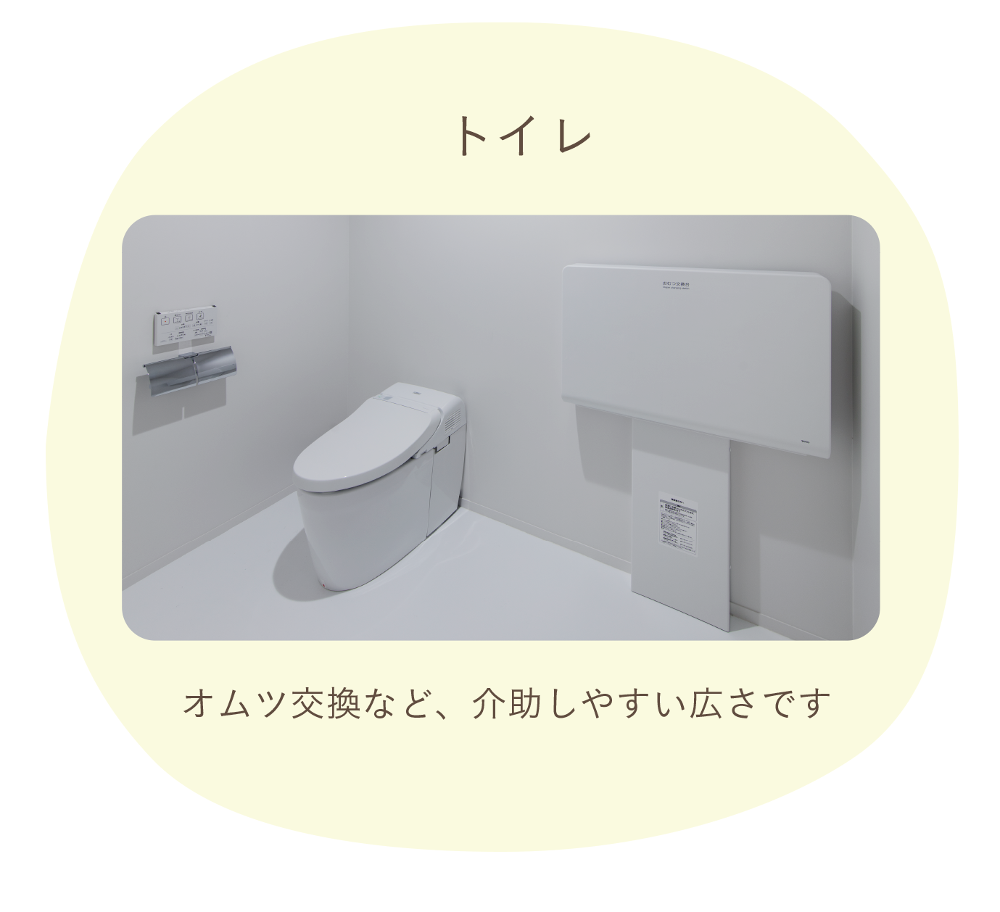
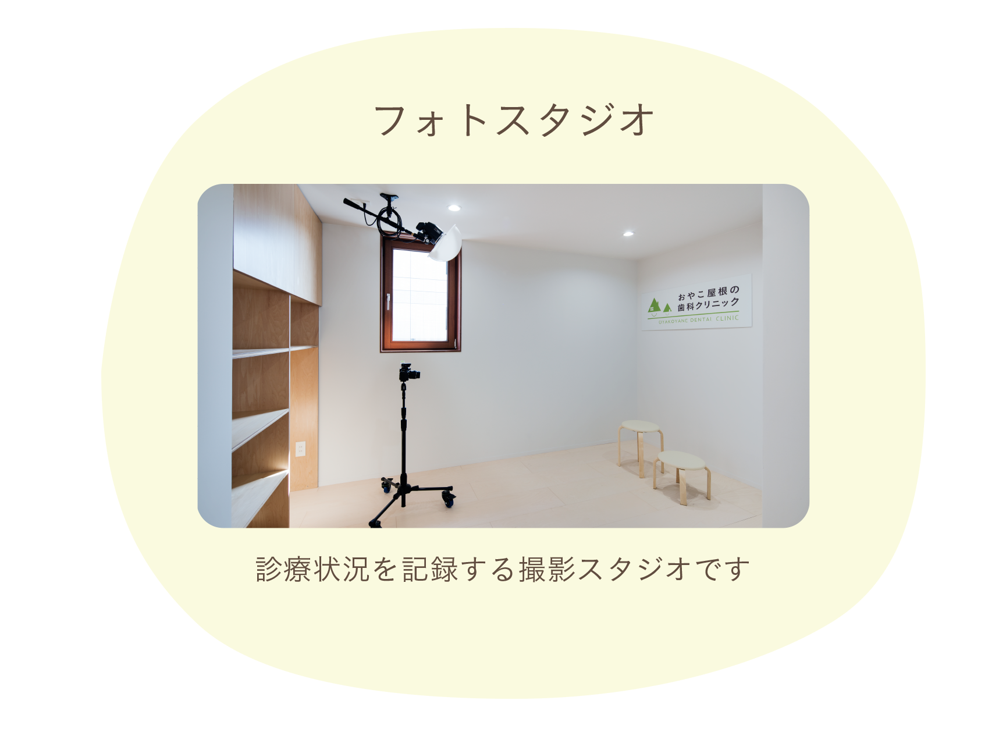
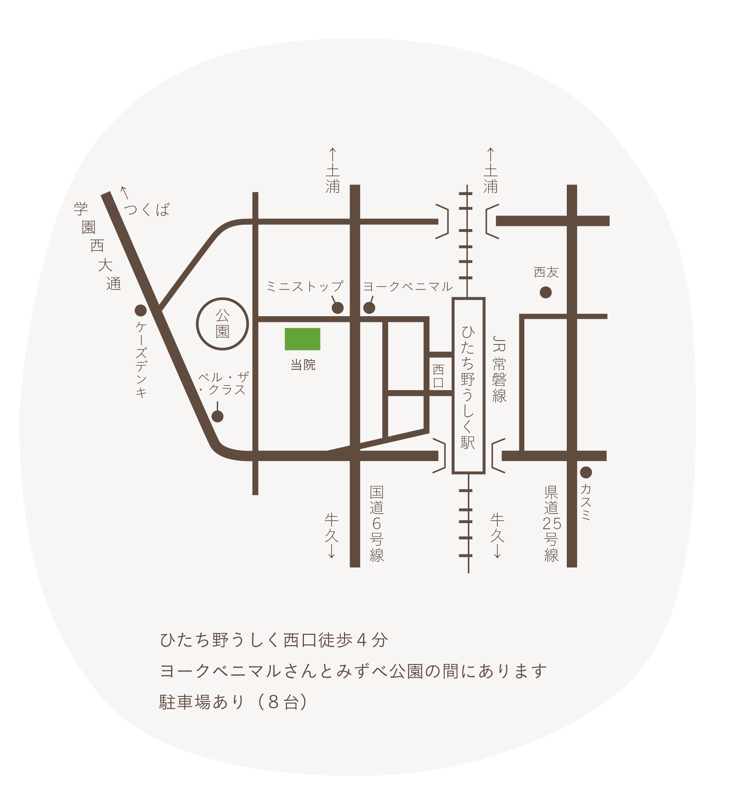

茨城県牛久市 ・ ひたち野うしく駅西口徒歩4分
おやこ屋根の歯科クリニック
- 赤ちゃんから高齢者まで安心して通える歯科医院です -
小児歯科 / 歯科一般 / 小児矯正 / 赤ちゃん歯科 / 予防歯科 /
フェイシャルオーソトロピクス / 顎顔面口腔育成治療 / 口腔外科
新着お知らせ
| 2026.9.19 | 9月休診日について 2026年9月20日(日)〜9月24日(木)まで休診となります。9月25日(金)9:00より診療いたします。 |
|---|---|
| 2026.1.10 | 土曜日・平日夕方の予約状況について 現在、土曜日と平日夕方は大変混み合っており、歯科医師による治療の予約間隔は約1ヶ月毎となっております。ご理解のほどよろしくお願いいたします。 |
| 2017.11.1 | いばらきデザインセレクション に選定されました |
| 2016.9.5 | 開業しました |
おやこ屋根のコンセプト
おやこで来院できる歯科医院
お子さんの健康な成長の為に、保護者の方にお伝えしたい事がたくさんあります。
子どもが親になってもずっと通える歯科医院
赤ちゃん〜子ども〜成人〜高齢者まで、一生涯通える歯科医院です。
人が自然と集まる屋根のような場所
いつでも帰ってこれる・患者さんを守っていく屋根のような存在を目指します。
親が子を、子が親を想うような気持ちで診療します
一人一人の患者さんを家族のように大切にしていきます。
ごあいさつ
こんにちは！院長の中田真吾です。
私は幼い頃から隣の土浦市で過ごしました。学生時代からいつか地元に帰り、地域の皆さん・友人・知人の健康に寄与したいという夢をもっておりました。
口の中だけでは無く、全身の健康も診ていきます。特に生まれたばかりの赤ちゃんや乳幼児の頃は、全身や顎の発育にとって非常に重要な時期です。専門のスタッフとともに食事や遊び・コミュニケーションなどご家族にアドバイスできればと思っています。
生涯ひたち野うしくで歯科医療を行っていきますので、どうぞよろしくお願いします。
院長 中田 真吾

治療内容
赤ちゃん歯科・小児歯科
新生児・乳幼児期に顎は最も成長しますので、妊娠中・生後すぐから正しい成長発育のアドバイスをします。
虫歯は乳幼児期からの食生活の乱れが大きな原因です。食生活は子ども達の健康な成長発育にも大きく関与するだけでは無く、成人の生活習慣病や口腔内環境にまで影響を及ぼします。赤ちゃん、お子さんが心身ともに健康に育つよう保護者の方の力になります。
予防歯科
自分の歯で咬める事は非常に重要です。「削る・被せる・抜く」といった歯科治療によって咬み合わせが変わると健康を害する可能性があります。
生涯自分の歯で生活できるよう、患者さんに合った生活指導・口腔内清掃指導を行います。
一般歯科
「削らない・抜かない・神経を残す」を理念としています。
歯科治療は痛いというイメージをお持ちの方も多いと思いますが、時間をかけて行う事で、ほとんど無痛に近い治療を行う事が可能です。リラックスできるように、コミュニケーションを大切にしています。
小児矯正（顎顔面口腔育成治療・RAMPAセラピー）
当院の小児矯正はRAMPAセラピーという、従来の矯正治療とは考え方・方法が全く異なる治療法です。
近年、呼吸器系の疾患（いびき、鼻閉、無呼吸など）をかかえる子ども達が非常に多くなってきました。この治療では顎の正しい成長を促すことで気道を確保し、鼻呼吸のできる環境を整え、同時に歯並びを改善させていきます。
お子さんの歯並び・かみ合わせでお悩みの方は、お気軽にご相談ください。RAMPAセラピーについて
高齢者歯科
全身疾患をお持ちの方も一度ご相談ください。以前は東京医科歯科大学スペシャルケア外来（高齢者歯科）で有病者の方の診療を行っておりました。
障がい者歯科
障がいをお持ちの方も一度いらっしゃってください。場所に慣れてもらうことからスタートし、歯磨きの練習、PMTC、予防処置を行います。虫歯や身体の状態によっては専門機関と提携して診ていきます。
医院紹介





アクセス・診療時間
| 診療時間 | 月 | 火 | 水 | 木 | 金 | 土 | 日 | 祝 |
|---|---|---|---|---|---|---|---|---|
| 9:00〜13:00 | ○ | ○ | ○ | ／ | ○ | ◎ | ／ | ／ |
| 14:30〜18:00 | ○ | ○ | ○ | ／ | ○ | ◎ | ／ | ／ |
- ◎ 土曜日のみ 9:00〜13:00 / 14:00〜17:30
- 最終受付 17:30（土曜日は17:00）＜予約優先制＞
- 休診日：木曜・日曜・祝日
- 住所
- 〒300-1206 茨城県牛久市ひたち野西2-28-4
- 電話
- 029-846-1085（予約制）
- 最寄り
- ひたち野うしく駅西口 徒歩4分（ヨークベニマルさんとみずべ公園の間）
- 駐車場
- あり（8台）

施設基準
- 当院は保険医療機関です。
- 個人情報保護法を順守しています。
- 明細書を無料で発行しています。また患者様の希望があれば明細書を発行しないことも可能です。
- 当院は以下の施設基準等に適合している旨、厚生労働省地方厚生局に届出を行っています。
初診料（歯科）の注1に掲げる基準
歯科外来診療における院内感染防止対策に十分な体制の整備、十分な危機を有し、研修を受けた常勤の歯科医師及びスタッフがおります。
オンライン資格確認による医療情報の取得
当院では、オンライン資格確認システムを導入しており、マイナンバーカードが健康保険証として利用できます。
患者様の薬剤情報等の診療情報を取得・活用して、質の高い医療提供に努めています。
歯科外来診療医療安全対策加算1
当院には、医療安全対策に関する研修を受けた歯科医師及び医療安全管理者を配置、AEDを保有し、緊急時の対応及び医療安全について十分な体制を整備しています。
歯科外来診療感染対策加算1
当院では、院内感染管理者を配置しており、院内感染防止対策について十分な体制を整備しています。
小児口腔機能管理料及び注3に規定する口腔管理体制強化加算
歯科疾患の重症化予防に資する継続管理（口腔機能等の管理を含む）、高齢者・小児の心身の特性及び緊急時対応等に係る研修を全て終了するとともに、う蝕や歯周病の重症化予防に関する継続管理の実績があり、地域連携に関する会議等に参加しています。
クラウンブリッジ維持管理料
装着した冠（被せ物）やブリッジについて、2年間の維持管理を行っています。